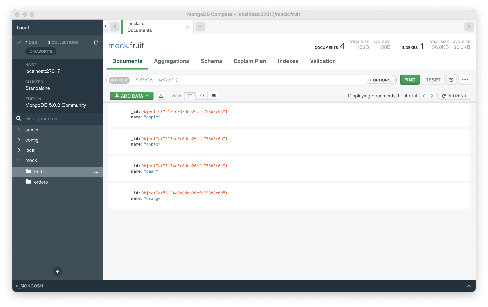

MongoDB - Getting Started¶
MacOS環境で、MongoDBの導入から基本操作(CRUD)までをまとめるメモ。
MongoDB 導入(概要)¶
1. brewでインストール¶
brew install mongodb-community
2. バージョン確認¶
mongo --version
3. ローカルからの起動について(mongosh)¶
brewでサービスを起動¶
brew services start mongodb-community
MongoDBホームページの方法でDBにアクセス¶
ログイン情報¶
username: tstdemo
password: *****
ログインコマンド¶
mongosh "mongodb+srv://{tstyuan}.qtihi.mongodb.net/{DB名}" --username {tstdemo}
サービスを停止する¶
brew services stop mongodb-community
ローカル環境で操作開始¶
mongo
Compass(MongoDB用GUI)について¶
アクセスしたイメージは下図のように見える 
デフォルトのDBは３つある。
admin
config
local
※ 上図にあるmock DBは自分がdumpしたもの。
MongoDB 構造¶
- DB
- Collection
- Document_1
- Document_2
- ...
- Document_n
2. Collection について¶
collection 一覧¶
show collections
collection 作成¶
db.createCollection('コレクション名');
collection 削除(回復できない！！)¶
db.fruit.drop();
3. Document について¶
insert フォーマット¶
db.{collection}.insertOne({JSON対象})
db.{collection}.insertMany([{JSON 1}, {JSON 2}, ...{JSON n}])
例
db.fruit.insertOne({name: "apple"})
db.fruit.insertMany([
{name: "apple"},
{name: "pear"},
{name: "orange"}
])
find 検索¶
db.{collection_name}.find({検索条件})
例
db.{collection_name}.find({"year":2021})
db.{collection_name}.find({$and/or: [{"year":2021}, {"name":namae}]}) 複数条件 and または or
db.{collection_name}.find({"title": /^B/} ) ※正規表現も検索できる
MQLとSQLにおける条件指定の表現対照¶
SQL |
MQL |
|---|---|
a = 1 |
{a: 1} |
a <> 1 |
{a: {$ne: 1}} |
a > 1 |
{a: {$gt: 1}} |
a >= 1 |
{a: {$gte: 1}} |
a < 1 |
{a: {$lt: 1}} |
a <= 1 |
{a: {$lte: 1}} |
a = 1 AND b =1 |
{a: 1, b: 1} or {$and: [{a: 1}, {b: 1}]} |
a = 1 OR b = 1 |
{$or: [{a: 1}, {b: 1}]} |
a IS NULL |
{a: {$exists: false}} |
a IN (1, 2, 3) |
{a: {$in: [1, 2, 3]}} |
find()で”feild.sub_field”を検索するとき、必ず、sub_fieldまで書くこと。feildのみでの検索は何も返されない¶
db.fruit.insertOne(
name: "apple",
from: {
country: "Japan",
province: "Tokyo"
}
)
上記のデータを作成し、下の例で検索してみればわかる。
db.fruit.find({"from.country": "Japan"})
db.fruit.find({"from": {country: "Japan"}}) ← 何も返されない。
find()で配列も検索できる¶
db.fruit.insert([
{"name": "Apple", color: ["red", "green"]},
{"name": "Mango, color:["yellow", "green"]}
])
上記のデータを作成し、下の例で検索してみる。
db.fruit.find({color: "red"})` 1つの結果が返される
db.fruit.find({$or: [{color: "red"}, {color: "yellow"}]}) 2つの結果が返される
複数の条件で検索するとき、$elemMatchでの例¶
db.getCollection('movies').find({
"filming_locations": {
$elemMatch: {"city": "Rome", "country": "USA"}
}
})
※下記のように検索してみて上記との結果について考えてみる。
db.getCollection('movies').find({
"filming_location.city": "Rome",
"filming_location.country": "USA"
})
検索結果をフォーマットして検索する方法¶
db.movies.find({"category": "action"}, {"_id":0, title:1}) ←idを返さず、タイトルのみ返す指定
remove 削除¶
db.fruit.remove({<条件を指定する>})
db.fruit.remove({}) fruitコレクションの全てを削除する。
db.fruit.remove() ※削除できない！！エラーが返される。
update 更新¶
db.fruit.update({検索条件}, {$set: 更新内容})
例
このデータを挿入する。
db.fruit.insertMany([
{name: "apple"},
{name: "pear"},
{name: "orange"}
])
この文で更新してみる。
db.fruit.updateOne({"name": "apple"}, {$set: {from: "Japan"}})
注意事項：
updateOne複数文での更新はすべてはできない、一行目の文での更新しかできない。updateMany複数文でも更新できる更新内容部分の指定は以下に必ず書くこと。＄set/＄unset
＄push/＄pushAll/ ＄pop
＄pull/ ＄pullAll
＄addToSet
次回のメモは、簡単なサンプル(Python + MongoDB)を作成して、Mongo DBを理解する。